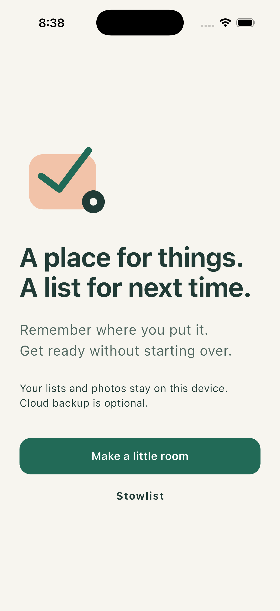

Keep your things
Give an item a name, a place, and an optional photo or note. Search things, places and notes when you need them.
A little less to keep in your head
Know what to take, and where you put it. Reusable packing lists meet a simple library of your things, photos and saved places.
Available free for iPhone. Requires iOS 17 or later.

From the Stowlist iPhone app.
Put the small details somewhere
For office mornings, gym sessions, weekend bags, or the things you always mean to bring. Keep a familiar list ready for its next outing.
Give an item a name, a place, and an optional photo or note. Search things, places and notes when you need them.
Link saved items to a checklist so what you need and where it lives stay together.
Mark items packed or skip them for this outing. Finish the run and start fresh next time without rebuilding your list.
Where did I put that?
A place name is enough. Add a photo if it helps, keep a short note, and update the location when something moves.
Stowlist remembers the place you enter. It does not track an object or use GPS to find it.
Try the idea
Some days you need everything. Some days you can skip the notebook. Your reusable list stays ready either way.
0 packed · 0 skipped · 3 to check
Website example only. Changes are not saved.
Useful without the fuss
Finish a checklist to save its date and packed or skipped counts. Your completed runs stay with the list when you start again.
Start with an editable list, make one from scratch, or duplicate a familiar list for a different outing.
Your item library, photos, and checklists live on your device. The core app works offline, with no advertising or task-behavior analytics.
Export a portable copy with photos, or choose a manual cloud backup for text and list details. Cloud backup does not include photos and is tied to an anonymous device identity. See how backup works.